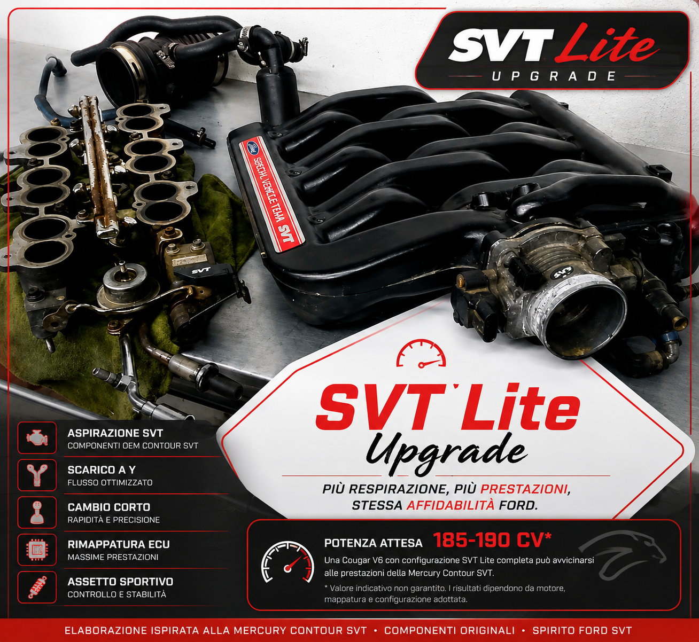

ELABORARE

SVT LITE
La configurazione SVT Lite rappresenta una delle elaborazioni più apprezzate tra gli appassionati della Ford Cougar V6. Basata sui componenti originali della Mercury Contour SVT, si concentra sull'aggiornamento del sistema di aspirazione del motore Duratec, mantenendo un'impostazione affidabile e coerente con la filosofia OEM Ford.
L'obiettivo non è trasformare la Cougar in un'auto da competizione, ma sfruttare componenti originali progettati per una versione più performante dello stesso propulsore, migliorandone il respiro e la risposta.
COMPONENTI SVT LITE
- Collettori di aspirazione inferiori maggiorati (LIM)
- Collettori di aspirazione superiori SVT (UIM)
- Corpo farfallato SVT
- Staffa del corpo farfallato (TB Bracket)
- Cavo acceleratore SVT (solo cambio manuale)
- Tubo di aspirazione SVT maggiorato
- Sensore MAF SVT
- Iniettori Green SVT
- Airbox SVT/ST200 con snorkel inferiore
- Logo identificativo SVT Lite
NOTE IMPORTANTI
La rimappatura della centralina non è indispensabile per il corretto funzionamento della configurazione SVT Lite, ma è consigliata per ottenere il massimo beneficio dalle modifiche apportate.
Prima di acquistare i collettori inferiori maggiorati (LIM), è consigliabile verificare quelli già installati sulla propria Cougar europea: alcuni esemplari potrebbero essere già equipaggiati con questa versione.
Durante l'intervento è inoltre consigliata la sostituzione delle guarnizioni del corpo farfallato e dei collettori di aspirazione con ricambi nuovi, così da evitare eventuali infiltrazioni d'aria e garantire un montaggio ottimale.
Video
Mercury Cougar 1988 con pacchetto SVT Lite
SVT CONVERSION
I più appassionati si sono spinti oltre la sola aspirazione, realizzando una conversione completa del motore — quella che nella community viene chiamata SVT Conversion o full conversion.
Questa configurazione prevede lo swap del motore con un'unità proveniente da una Ford Contour SVT, abbinato all'installazione dell'intero sistema di aspirazione SVT, dell'impianto di scarico ad alte prestazioni e della rimappatura della centralina. Non si tratta quindi di una semplice modifica all'aspirazione, ma di un intervento sostanziale che trasforma il carattere della vettura.
Chi porta a termine una conversione completa espone tradizionalmente il logo SVT rosso sul retro della vettura, come riconoscimento all'interno della community degli appassionati.
COMPONENTI TIPICI
- Swap del motore (unità SVT completa)
- Kit aspirazione SVT completo (come da configurazione SVT Lite)
- Scarico a Y con terminali sportivi (tra i più gettonati: Ulter Sport e FOX)
- Frizione rinforzata
- Volano alleggerito
- Leva del cambio corta
- Assetto sportivo
- Rimappatura centralina ECU
Nota: La configurazione SVT Lite non è un allestimento ufficiale Ford, ma un'elaborazione sviluppata e perfezionata nel tempo dalla community internazionale Ford Cougar, utilizzando prevalentemente componenti originali della Mercury Contour SVT.